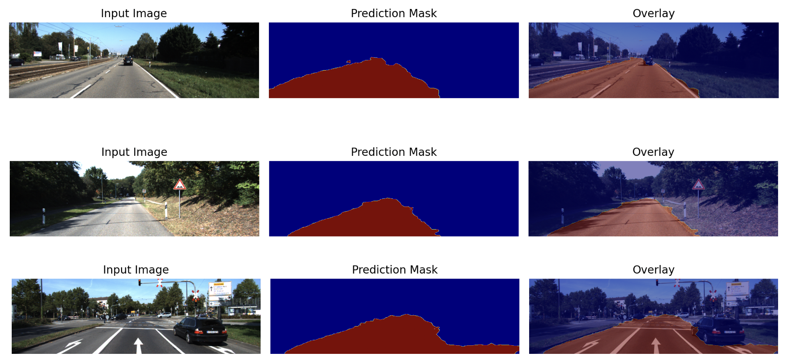
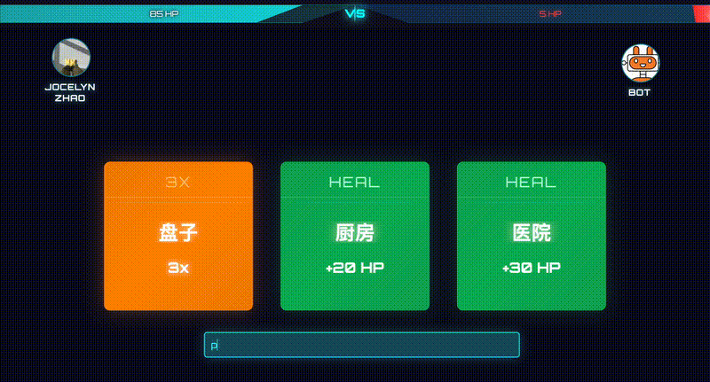

SegFormer Image Segmentation
Reimplement published image segmentation model, evaluated on KITTI road segmentation datatset

2048 Reinforcement Learning
Built reinforcement learning agent to play 2048

BattleLingo
Live Player vs Player or Player vs Bot typing game to make language learning fun!
